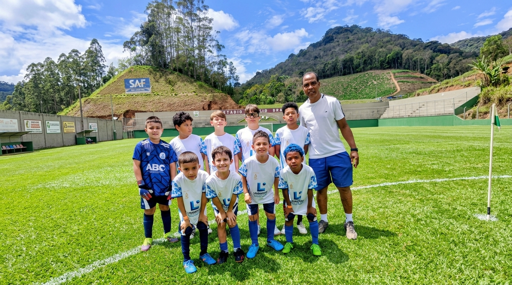
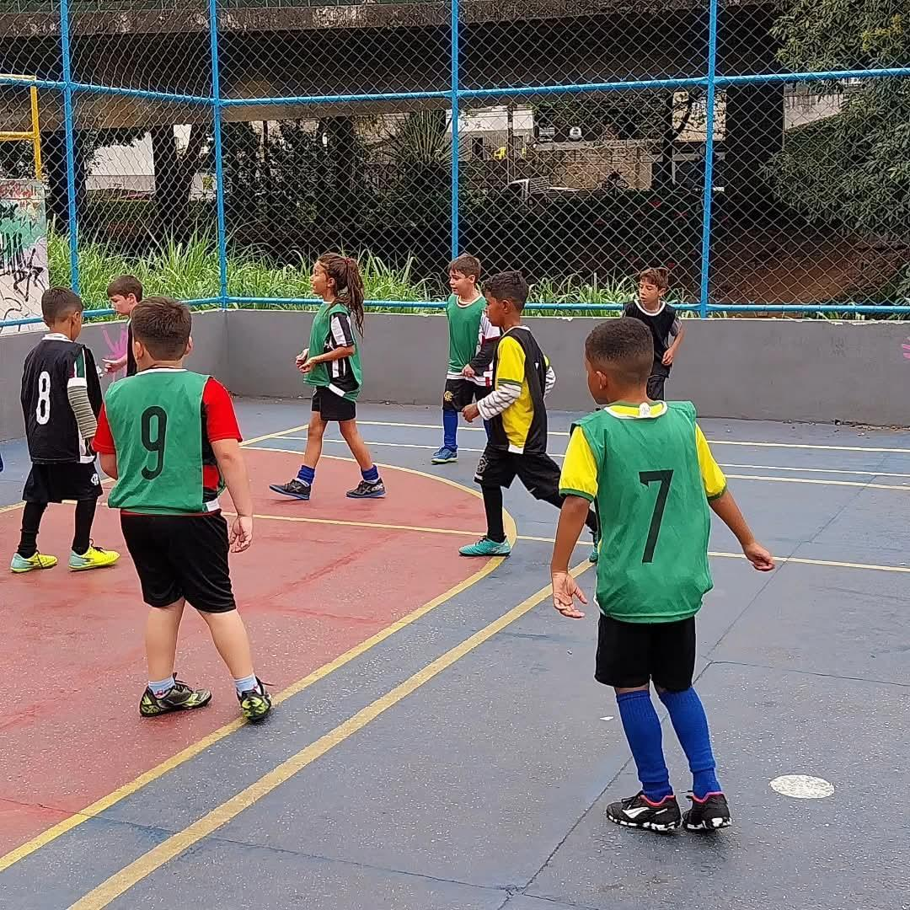
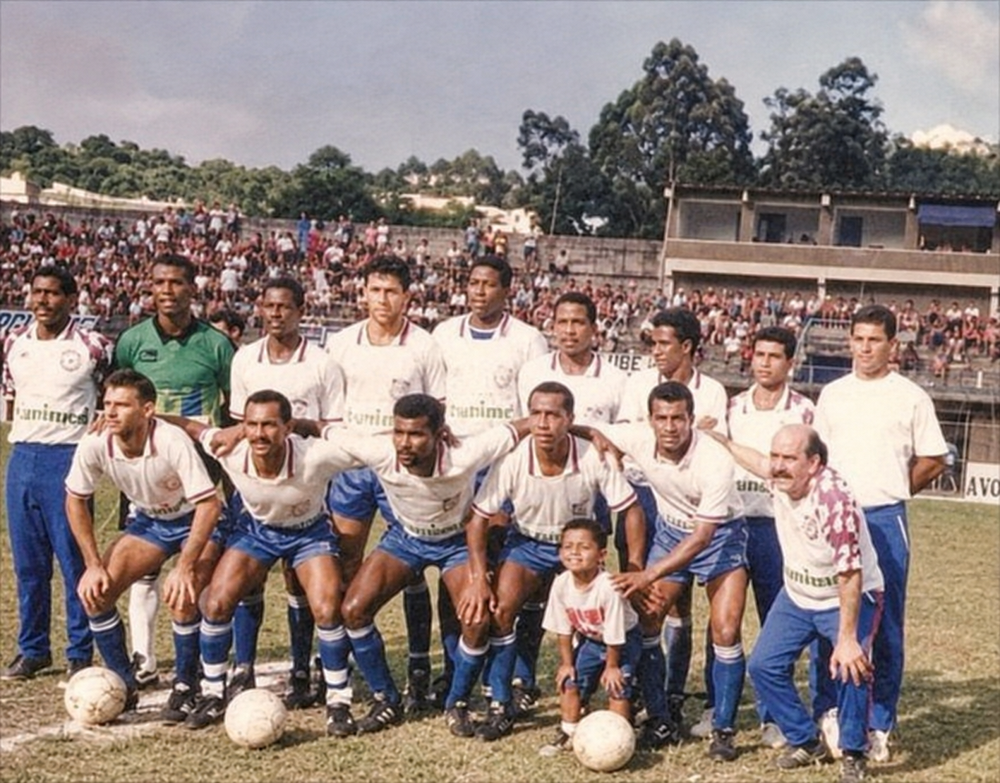
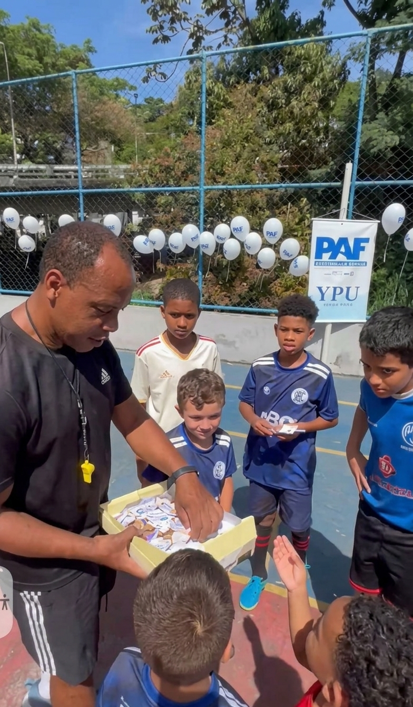

Aulas
Momentos para conhecer o futsal e praticar os fundamentos: passe, domínio, condução e finalização. Cada exercício respeita a idade e o ritmo da criança.

Aqui se joga com respeito
Futsal no bairro, perto de casa, para quem já joga e para quem nunca chutou uma bola.
Cada criança entra em quadra do seu jeito, e todas são bem-vindas.
Uma bola em quadra nunca é só uma bola. É um convite para correr junto, aprender com o outro e viver a alegria de fazer parte de um time.
É com esse espírito que o Projeto Social de Futsal do Bairro Ypú abre a quadra, de forma gratuita, para meninas e meninos de 4 a 14 anos.
Aqui ninguém precisa chegar sabendo. Cada criança aprende no seu ritmo, ganha confiança a cada treino e descobre que o jogo fica melhor quando todos participam.

Pelo colega, pelo adversário, pelo professor e pelas regras do jogo.
Ninguém vence sozinho. O passe certo vale tanto quanto o gol.
Chegar no horário, ouvir, tentar de novo. Hábitos que servem para a vida.
Crianças de vários bairros que se encontram e criam laços.


Ex-atleta profissional do Friburguense.
Ailton conhece o futebol de dentro do campo: a rotina de treinos, a pressão dos jogos e a força de um grupo unido. Sabe que a bola ensina muito além da técnica.
Hoje, leva essa experiência para a quadra do Ypú como responsável pelo projeto. Conduz as aulas e os jogos, acompanha cada criança de perto e recebe as famílias com a mesma dedicação que tinha em campo.
O que o futebol me deu, quero devolver para as crianças do bairro.
As atividades se dividem entre aprender e colocar em prática, sempre com orientação e num ambiente seguro.
Momentos para conhecer o futsal e praticar os fundamentos: passe, domínio, condução e finalização. Cada exercício respeita a idade e o ritmo da criança.
Hora de reunir o time e colocar em prática o que foi aprendido. Em quadra, as crianças aprendem a ganhar, a perder e a jogar limpo.
Quer que seu filho ou sua filha participe? Fale com o Ailton pelo WhatsApp para saber os dias, os horários e como fazer parte.
No coração de Ypú, em Nova Friburgo. Uma quadra do bairro, de portas abertas para as crianças.
Dúvidas sobre as aulas, os jogos ou o projeto? Escolha o canal que preferir.